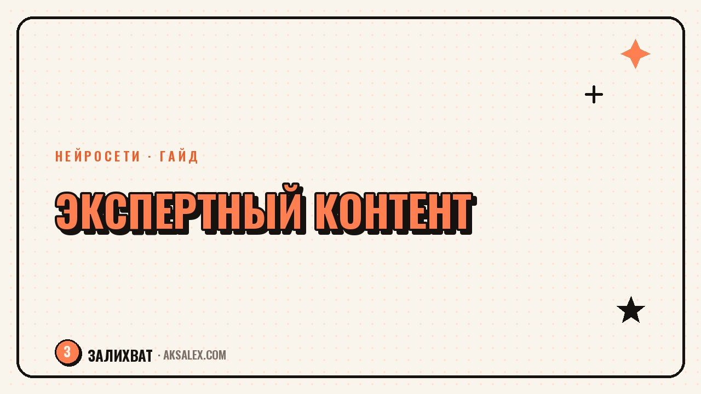

Как показать экспертность в контенте

Экспертность доказывается не фразой «я профессионал», а тем, как ты решаешь задачи аудитории на её глазах. Настоящий эксперт не рассказывает о своих регалиях, он разбирает проблему так, что читатель думает: этот человек понимает, о чём говорит. Разберём, как показывать компетентность через контент - без хвастовства, но убедительно, и какие форматы работают на репутацию сильнее всего.
Экспертность показывают, а не заявляют
Слова «я эксперт с десятилетним опытом» не убеждают - их пишет каждый. Доверие рождается, когда ты разбираешь конкретную ситуацию и читатель видит глубину: ты замечаешь то, что новичок пропускает, объясняешь причины, а не только следствия.
Аудитория оценивает не диплом, а полезность. Если твой разбор помог человеку решить задачу или понять то, что мучило, он сам сделает вывод о твоей компетентности. Это в разы сильнее любого перечисления титулов в шапке профиля.
Экспертность не доказывают регалиями. Её показывают тем, как ты думаешь и решаешь задачу на глазах у читателя.
Форматы, которые строят репутацию
Есть форматы, которые работают на экспертность лучше остальных, потому что демонстрируют мышление, а не самопрезентацию.
| Формат | Что доказывает | Пример |
|---|---|---|
| Разбор кейса | Ты решаешь реальные задачи | «Как вывел клиента из минуса» |
| Ответ на частый вопрос | Ты знаешь боли аудитории | «Почему не растёт охват» |
| Разбор ошибки рынка | Ты видишь глубже других | «Почему этот совет вредит» |
| Пошаговый разбор | Ты владеешь методом | «Как я делаю это по шагам» |
| Мнение по спорной теме | У тебя есть позиция | «Почему я против этого подхода» |
Заметь: ни один формат не про тебя напрямую. Все они про задачу аудитории, решённую твоими руками. Экспертность проступает как побочный эффект пользы, и это самый убедительный способ её показать.
Как разбирать так, чтобы верили
Сильный экспертный разбор идёт от проблемы к решению через причину. Не «делайте так», а «вот почему это работает и когда не сработает». Именно объяснение причин отличает эксперта от того, кто пересказал чужие советы.
Что усиливает доверие
- Конкретика: цифры, сроки, реальные ситуации, а не общие слова.
- Причины, а не только рецепты: почему это работает.
- Честность про ограничения: где метод не подходит.
- Свой опыт: «на практике я вижу», «в моих проектах».
Не бойся признавать нюансы и исключения. Готовность сказать «здесь всё сложнее» вызывает больше доверия, чем безапелляционные обещания. Настоящий эксперт знает границы своего метода и не боится о них говорить.
Доказательства без хвастовства
Доказательства компетентности нужны, но подавать их стоит через пользу, а не через тщеславие. Вместо «я крутой» покажи результат в контексте разбора: как задача решалась и что получилось. Кейс убеждает сильнее прямой похвалы себе.
Отзывы, цифры и результаты работают, когда они вплетены в историю и служат уроком для читателя. Тот же кейс можно подать как хвастовство, а можно как разбор с выводами, полезными аудитории. Второй вариант строит репутацию, первый - отталкивает.
Ошибки, которые убивают экспертность
Первая ошибка - говорить о себе вместо задач аудитории. Лента из регалий и достижений скучна и не убеждает. Вторая - усложнять язык, чтобы казаться умнее: настоящий эксперт объясняет сложное понятно, а не наоборот.
Третья ошибка - раздавать очевидные советы уровня «пейте воду». Они не показывают глубину. Давай то, что новичок не знает или понимает неверно. Четвёртая - бояться своей позиции и писать обтекаемо. Мнение и взгляд - часть экспертности, без них ты сливаешься с сотней одинаковых аккаунтов.
Частые вопросы
Как показать экспертность, если нет громких регалий?
Через разборы задач аудитории. Покажи, как ты решаешь проблему и почему это работает. Полезный разбор убеждает в компетентности сильнее любого перечисления титулов.
Какой формат лучше всего работает на репутацию?
Разбор кейсов и ответы на частые вопросы. Они показывают мышление и знание болей аудитории, а не самопрезентацию. Экспертность проступает как побочный эффект пользы.
Как доказывать компетентность без хвастовства?
Вплетай результаты и кейсы в разбор с выводами для читателя. Тот же результат можно подать как похвальбу или как урок - второе строит репутацию, первое отталкивает.
Нужно ли усложнять язык, чтобы выглядеть экспертом?
Наоборот. Настоящий эксперт объясняет сложное простыми словами. Заумный язык не добавляет веса, а мешает пользе и отпугивает аудиторию, ради которой ты пишешь.
Стоит ли высказывать спорное мнение?
Да, аргументированная позиция - часть экспертности. Она выделяет тебя среди одинаковых аккаунтов. Главное - опирать мнение на опыт и причины, а не на желание поспорить.
Раз тема оказалась полезной, вот что почитать следующим. Разбираем, как тестировать хуки для роликов и по каким цифрам понять, что вариант рабочий.
Читать статью →а не вручную